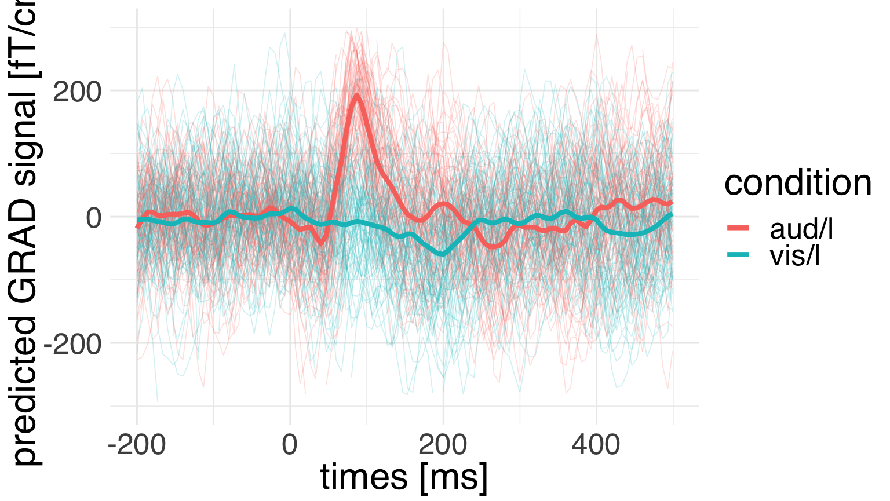
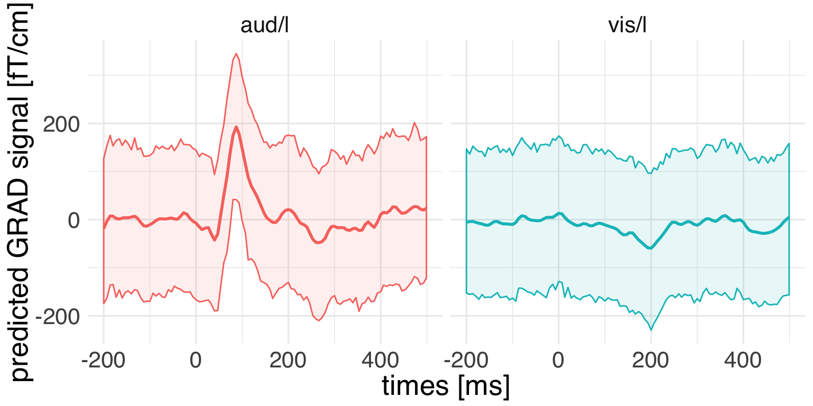
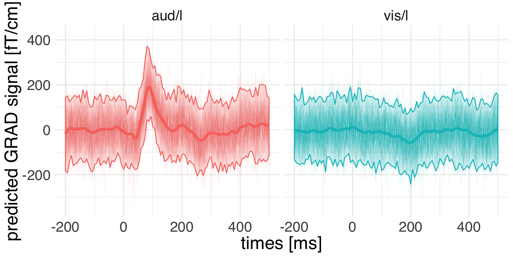

vignettes/plot_evoked_multilevel_model.Rmd
plot_evoked_multilevel_model.RmdHere we will use a multilevel model to assess the difference between two conditions over time. For now we will stick with the lme4 optimization-based implementation and use the parametric bootstrap for uncertainty estimation. Bayesian inference will be covered in a future example.
## Importing MNE version=0.18.dev0, path='/Users/dengeman/github/mne-python/mne'Let’s read in the raw data.
data_path <- mne$datasets$sample$data_path()
subject <- "sample"
raw_fname <- paste(data_path,
'MEG',
subject,
'sample_audvis_filt-0-40_raw.fif',
sep = '/')
raw <- mne$io$read_raw_fif(raw_fname, preload = T)We can now go ahead and compute evokeds.
events <- mne$find_events(raw)
storage.mode(events) <- "integer" # R gets the events as floats.
tmin <- -0.2
tmax <- 0.5
baseline <- reticulate::tuple(NULL, 0)
event_id <- list("aud/l" = 1L, "vis/l" = 3L)
picks <- mne$pick_channels(raw$ch_names, list('MEG 1332'))
epochs <- mne$Epochs(raw = raw, events = events, event_id = event_id,
tmin = tmin, tmax = tmax,
picks = picks %>% as.integer(),
baseline = baseline, reject = NULL, preload = T) Let’s get the epochs into a dataframe.
Now we can set up a simple varying effects model:
\[ y_i \sim N(\alpha + \alpha[j] + T\beta[j]_i, \sigma^2) \] Where \(y_i\) is the MEG observation at a given epoch and time point, \(\alpha\) is the global intercept, \(\alpha[j]\) the intercept of each tome point, \(T\) is our treatment information, and \(\beta[j]\) is the estimated treatment effect over all \(j\) time points of the epoch. The multilevel model will learn a population-shrinkage that depewnds on the variance over the time.
One of the assumptions of this model is that all \(J\) coefficients come from a common distribution:
\[ \beta_{j} \sim N(\mu_{\beta[j]}, \sigma_{j}^2) \] This is what makes this model one model instead of \(j\) separate models. In this model, all \(j\) coefficients are shrunk to \(\mu_j\) to an extent that is proportional to the variance of the group effects.
mod1 <- lmer(observation ~ 1 + condition + (1 + condition | time),
data = epochs_df)
mod1 %>% summary() %>% print()## Linear mixed model fit by REML ['lmerMod']
## Formula: observation ~ 1 + condition + (1 + condition | time)
## Data: epochs_df
##
## REML criterion at convergence: 177903.2
##
## Scaled residuals:
## Min 1Q Median 3Q Max
## -5.9168 -0.6324 -0.0012 0.6395 4.2404
##
## Random effects:
## Groups Name Variance Std.Dev. Corr
## time (Intercept) 2003 44.76
## conditionvis/l 2506 50.06 -0.94
## Residual 6032 77.67
## Number of obs: 15370, groups: time, 106
##
## Fixed effects:
## Estimate Std. Error t value
## (Intercept) 10.050 4.437 2.265
## conditionvis/l -21.756 5.021 -4.333
##
## Correlation of Fixed Effects:
## (Intr)
## conditnvs/l -0.927As often, looking at the coefficients and text summaries of such models is not tremendously helpful. We will instead generate predictions.
probe <- expand.grid(
condition = c("aud/l", "vis/l") %>% as.factor(),
time = epochs_df$time %>% unique()
)
pred_mod1 <- predict(mod1, probe)
probe$pred <- pred_mod1
ggplot(data = epochs_df,
mapping = aes(x = time, y = observation,
group = interaction(condition, epoch),
color = condition)) +
geom_line(size = 0.3, alpha = 0.4) +
geom_line(
size = 1.5, data = probe,
mapping = aes(x = time, y = pred, group = condition,
color = condition)) +
theme_minimal() +
theme(text = element_text(size = 24, family = "Helvetica")) +
labs(x = "times [ms]",
y = "predicted GRAD signal [fT/cm]") +
ylim(-300, 300)
We can see that the model predictions are recapitulating the temporal structure of the data. But how much uncertainty do we have about those predicrions?
In the absence of a full Bayesian analysis we can do an informed parametric bootstrap that takes into account all sources of uncertainty of our multilevel model, which yields more conservative estimates of compatibility intervals. We will use the merTools package for this purpose.
We’ll put a few custom options which should speak for themselves.
pred_interval_mod1 <- predictInterval(
merMod = mod1, newdata = probe, which = "full", level = 0.95,
n.sims = 1000, stat = "mean", type = "linear.prediction",
returnSims = T, seed = 42
)
probe_int <- bind_cols(
probe, pred_interval_mod1)Let’s first look at the compatibility intervals.
ggplot(
data = probe_int,
mapping = aes(x = time, y = pred, group = condition,
color = condition, ymin = lwr, ymax = upr)) +
geom_ribbon(mapping = aes(fill = condition), alpha = 0.1) +
geom_line(size = 1) +
theme_minimal() +
theme(text = element_text(size = 20, family = "Helvetica")) +
labs(x = "times [ms]",
y = "predicted GRAD signal [fT/cm]") +
facet_wrap(~condition) +
guides(color = F, fill = F)
Now let’s plot the single simulations on top of it. We first have to extract the simulations from the merTools output.
# let's subsample a few bootstrap simulations.
idx <- sample(1:1000, size = 100)
pred_sims <- attr(pred_interval_mod1, "sim.results")[,idx] %>%
as.data.frame() %>%
gather(key = "sim", value = "pred_hat")
pred_sims$sim <- pred_sims$sim %>% as.factor()
pred_sims$time <- probe_int$time
pred_sims$condition <- probe_int$condition
pred_sims$pred <- probe_int$predNow we can plot the prediction from each bootstrap replica. In order to not clutter things we will make generous use of transparency.
ggplot(
data = pred_sims,
mapping = aes(x = time, y = pred,
group = condition,
color = condition)) +
geom_line(
alpha = 0.05, mapping = aes(
y = pred_hat,
group = interaction(sim, condition))) +
stat_summary(
fun.ymin = function(x){quantile(x, 0.025)},
fun.ymax = function(x){quantile(x, 0.975)},
mapping = aes(x = time,
y = pred_hat,
fill = condition,
group = condition,
color = condition),
geom = "ribbon", alpha = 0.1) +
geom_line(size = 1.5) +
theme_minimal() +
theme(text = element_text(size = 20, family = "Helvetica")) +
labs(x = "times [ms]",
y = "predicted GRAD signal [fT/cm]") +
facet_wrap(~condition) +
guides(color = F, fill = F)
While we see a clear condition-relative modulation of the signal, at the same time we have to appreciate considerable uncertainty.